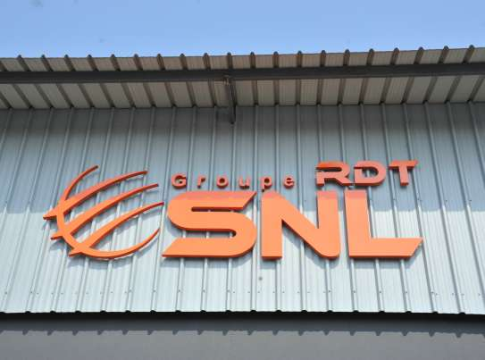
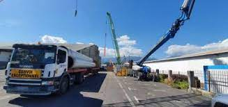

Experiences professionnelle :
Juin - Aout 2021 : Emploi Société Nouvelle Legarnisson, 97420.


J'ai eu un emploi saisonnier dans la période de juin à juillet 2021 dans une entreprise d'import-export.
Mes tâches :
- Aide à la préparation de commandes : Tri et regroupement de la marchandise, numérisation des dossiers client
- Aide à la gestion de l'entrepôt : Stockage et réception de marchandise, étiquetage, inventaire
Cette expérience professionnelle à été pour moi une petite introduction à ce qu’était le monde professionnel. De plus cette expérience à amélioré mes compétences relationnelles, et ceci, du fait d'avoir eu des collègues. Quand il fallait par exemple stocker les marchandises des clients dans l’entrepôt nous étions à plusieurs, il fallait souvent coordonner nos actions pour ranger de manière efficace.